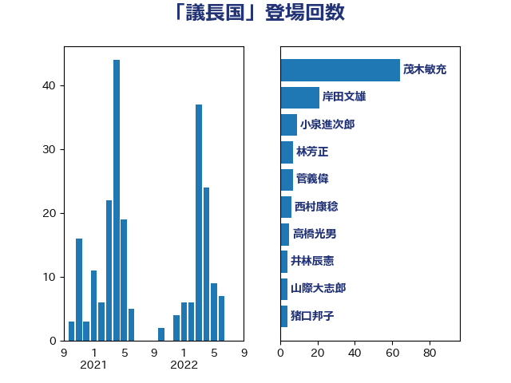

単語「議長国」

| 茂木敏充 | 自由民主党 | 64 回 |
| 岸田文雄 | 自由民主党 | 21 回 |
| 小泉進次郎 | 自由民主党 | 9 回 |
| 林芳正 | 自由民主党 | 7 回 |
| 菅義偉 | 自由民主党 | 7 回 |
| 西村康稔 | 自由民主党 | 6 回 |
| 高橋光男 | 公明党 | 5 回 |
| 井林辰憲 | 自由民主党 | 4 回 |
| 山際大志郎 | 自由民主党 | 4 回 |
| 猪口邦子 | 自由民主党 | 4 回 |
| 高市早苗 | 自由民主党 | 4 回 |
| 東徹 | 日本維新の会 | 3 回 |
| 沢田良 | 日本維新の会 | 3 回 |
| 石井浩郎 | 自由民主党 | 3 回 |
| 西田実仁 | 公明党 | 3 回 |
| 世耕弘成 | 自由民主党 | 2 回 |
| 佐藤茂樹 | 公明党 | 2 回 |
| 宮本周司 | 自由民主党 | 2 回 |
| 山下芳生 | 日本共産党 | 2 回 |
| 山口壯 | 自由民主党 | 2 回 |
| 斉藤鉄夫 | 公明党 | 2 回 |
| 横沢高徳 | 立憲民主党 | 2 回 |
| 浅田均 | 日本維新の会 | 2 回 |
| 浦野靖人 | 日本維新の会 | 2 回 |
| 羽田次郎 | 立憲民主党 | 2 回 |
| 辻清人 | 自由民主党 | 2 回 |
| 野田佳彦 | 立憲民主党 | 2 回 |
| 鈴木俊一 | 自由民主党 | 2 回 |
| 麻生太郎 | 自由民主党 | 2 回 |
| 三宅伸吾 | 自由民主党 | 1 回 |
| 三浦信祐 | 公明党 | 1 回 |
| 中根一幸 | 自由民主党 | 1 回 |
| 井上哲士 | 日本共産党 | 1 回 |
| 國場幸之助 | 自由民主党 | 1 回 |
| 大塚耕平 | 国民民主党 | 1 回 |
| 小西洋之 | 立憲民主党 | 1 回 |
| 平井卓也 | 自由民主党 | 1 回 |
| 本田顕子 | 自由民主党 | 1 回 |
| 梅谷守 | 立憲民主党 | 1 回 |
| 石川博崇 | 公明党 | 1 回 |
| 神津たけし | 立憲民主党 | 1 回 |
| 秋野公造 | 公明党 | 1 回 |
| 笹川博義 | 自由民主党 | 1 回 |
| 自見はなこ | 自由民主党 | 1 回 |
| 船橋利実 | 自由民主党 | 1 回 |
| 重徳和彦 | 立憲民主党 | 1 回 |
| 野田聖子 | 自由民主党 | 1 回 |
| 金子恭之 | 自由民主党 | 1 回 |
| 金子恵美 | 立憲民主党 | 1 回 |
| 階猛 | 立憲民主党 | 1 回 |
| 青木愛 | 立憲民主党 | 1 回 |
| 高良鉄美 | 無所属 | 1 回 |